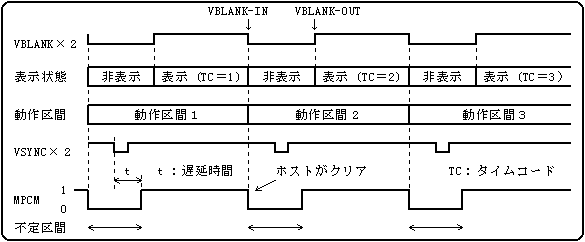
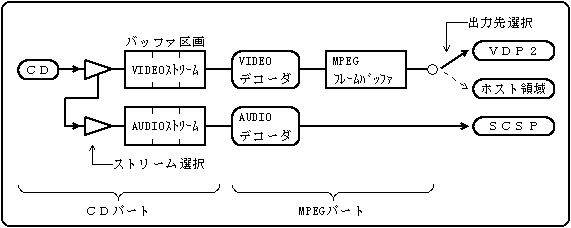
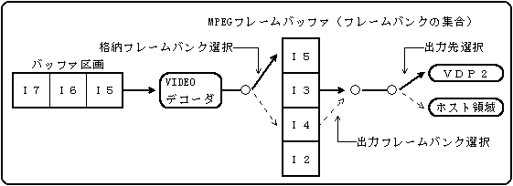
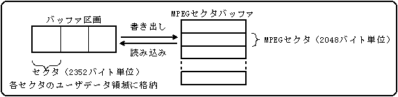

★PROGRAMMER'S GUIDE
★CD通信I/F(MPEGパート)
★PROGRAMMER'S GUIDE
★CD通信I/F(MPEGパート)
| レジスタ名 | R/W | 説 明 | アクセス関数 |
|---|---|---|---|
| HIRQREQ | R/W | 割り込み要因レジスタ | CDC_GetHirqReq,CDC_ClrHirqReq |
| HIRQMSK | R/W | 割り込みマスクレジスタ | CDC_GetHirqMsk,CDC_SetHirqMsk |
| MPEGRGB | R | MPEGレジスタ（RGBデータ） | CDC_GetMpegPtr |
レジスタ名 | R/W | 15 | 14 | 13 | 12 | 11 | 10 | 9 | 8 |
|---|---|---|---|---|---|---|---|---|---|
HIRQREQ | R/W | MPST | MPCM | MPED | |||||
7 | 6 | 5 | 4 | 3 | 2 | 1 | 0 | ||
| ビット | 名称 | 説 明 | 初期値 |
|---|---|---|---|
| bit11 | MPED | 1：MPEG関連処理の終了 | １ |
| bit12 | MPCM | 1：MPEG動作不定区間の終了 | ０ |
| bit13 | MPST | 1：MPEG割り込みステータスの通知（MPEG関連の割り込み発生） | ０ |
レジスタ名 | R/W | 15 | 14 | 13 | 12 | 11 | 10 | 9 | 8 |
|---|---|---|---|---|---|---|---|---|---|
HIRQMSK | R/W | MPST | MPCM | MPED | |||||
7 | 6 | 5 | 4 | 3 | 2 | 1 | 0 | ||
ビットの意味は割り込み要因レジスタと同じです。
（１：割り込み許可、０：マスク）
レジスタ名 | R/W | 15 | 14 | 13 | 12 | 11 | 10 | 9 | 8 |
|---|---|---|---|---|---|---|---|---|---|
MPEGRGB | R | TRP | B7 | B6 | B5 | B4 | B3 | G7 | G6 |
7 | 6 | 5 | 4 | 3 | 2 | 1 | 0 | ||
G5 | G4 | G3 | R7 | R6 | R5 | R4 | R3 | ||
| 名 称 | 説 明 |
|---|---|
| R3〜R7 | ：Ｒ（赤）データの上位５ビット |
| G3〜G7 | ：Ｇ（緑）データの上位５ビット |
| B3〜B7 | ：Ｂ（青）データの上位５ビット |
| TRP | ：透明ビット（画面特殊効果の透明ビットモードの設定で処理する） |
ビットの初期値は不定です。
| フラグ | コ マ ン ド |
|---|---|
| MPED | ・MPEGデコーダの初期化 （CDC_MpInit）※ |
| コ マ ン ド | 動作周期 | |
|---|---|---|
| デコード系（MPEGデコーダ、MPEGストリーム） | ２VSYNC | |
| 表示系（MPEG表示画面） | ノンインタレース | １VSYNC |
| インタレース | ２VSYNC | |
VBLANK-OUTでは、動作不定区間が終了していることが保証される。
VBLANK-OUTのタイミングからMPEG関連の処理を行うことを推奨する。
MPCMフラグは、MPEGデコーダのステータスが確定したことを示すフラグです。
MPCM＝１になってからVBLANK-INまでの間に発行したコマンドは、次区間で反映される。
ホスト側でMPCMフラグを０クリアし、再度１となるのを待つ。
図3.1 動作不定区間の判定

・直前のMPEGステータス情報の取得 | （CDC_MpGetLastStat） |
・MPEGデコーダの初期化 | （CDC_MpInit） |
・イメージデータウィンドウ位置の設定 | （CDC_MpSetImgPos） |
・イメージデータウィンドウサイズの設定 | （CDC_MpSetImgSiz） |
・イメージデータウィンドウからの読み込み | （CDC_MpReadImg） |
・イメージデータウィンドウへの書き出し | （CDC_MpWriteImg） |
・MPEGセクタバッファからのセクタ読み込み | （CDC_MpReadSct） |
・MPEGセクタバッファへのセクタ書き出し | （CDC_MpWriteSct） |
図3.2 動画再生モードのデータフロー

図3.3 静止画再生モードのデータフロー

図3.4MPEGセクタバッファモードのデータフロー

CDC_CdInit関数によりＣＤブロックのソフトリセットを実行する。
CDC_GetHwInfo関数を実行し、MPEGカートリッジが装着されているか調べる。
装着されていれば、SYS_CHKMPEG関数マクロを実行する。
（失敗しても最大２回まで実行）
成功すれば、CDC_MpInit関数でスイッチONを指定して実行し、MPEGシステムを起動する。
正常終了すれば、全てのMPEG通信関数が使用可能となる。
★PROGRAMMER'S GUIDE
★CD通信I/F(MPEGパート)